בהיר
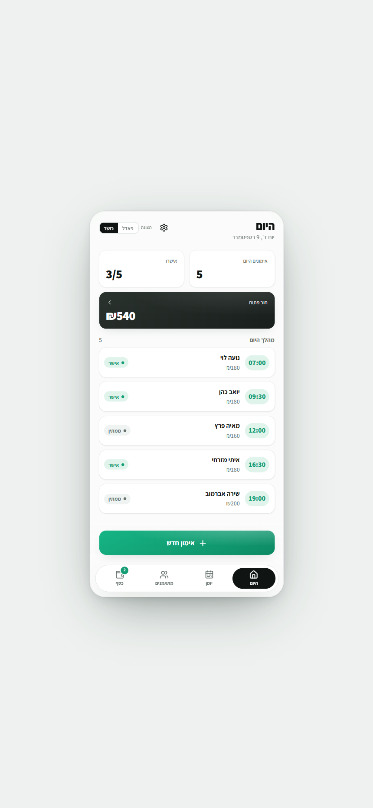
1 — Porcelain לבן נקי, ירוק
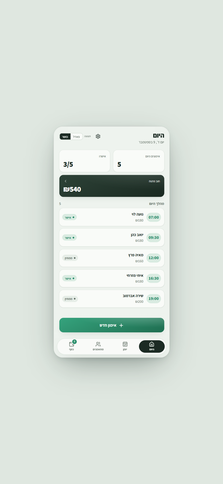
2 — Sage ירוק רך
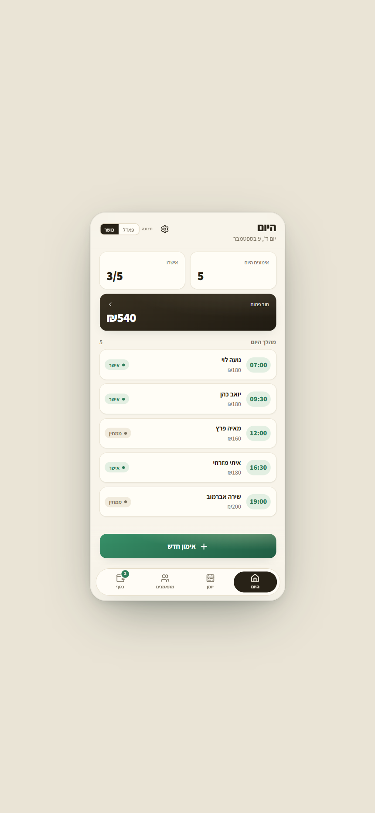
3 — Cream שמנת חמה
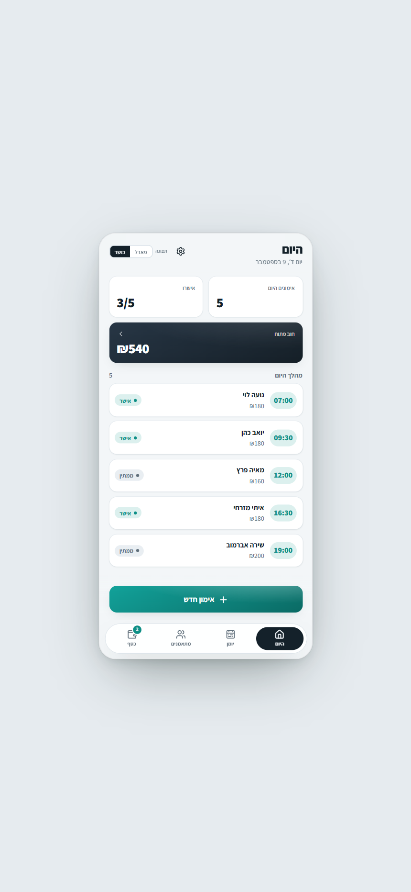
4 — Mist אפור-כחול + טורקיז
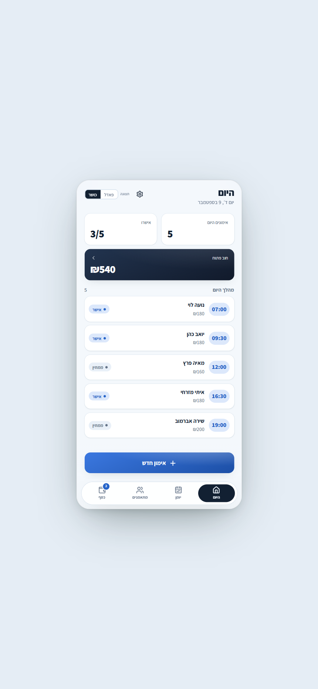
6 — Ocean כחול ים
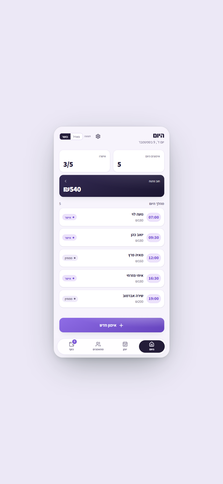
7 — Lavender סגול לבנדר
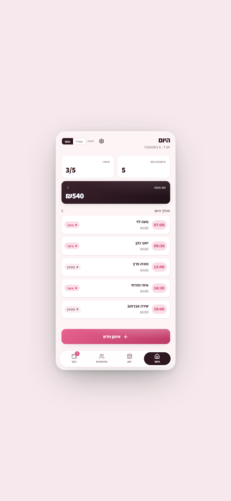
8 — Rose ורוד
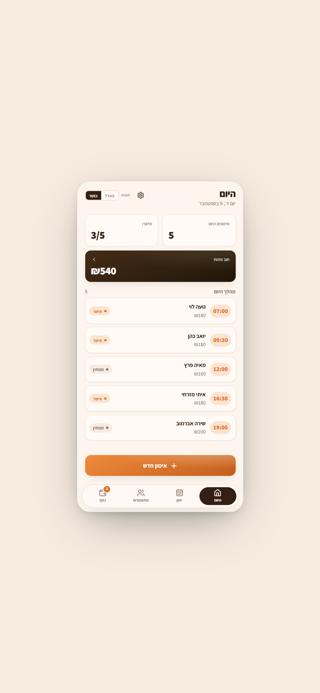
9 — Sunset כתום חמים
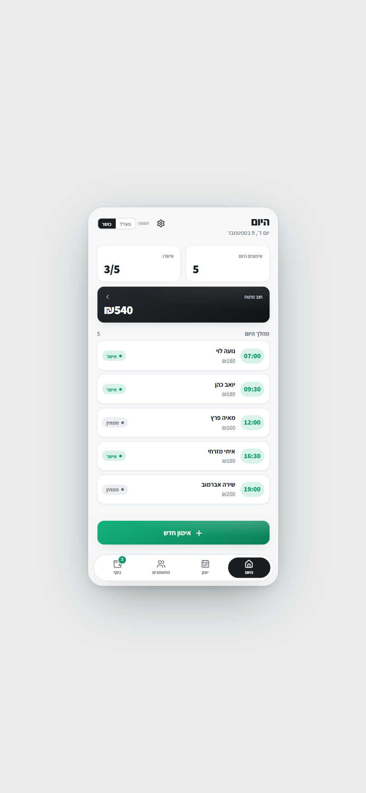
10 — Graphite Mint אפור נקי + מנטה
כהה (בהיר יותר מהמקורי)
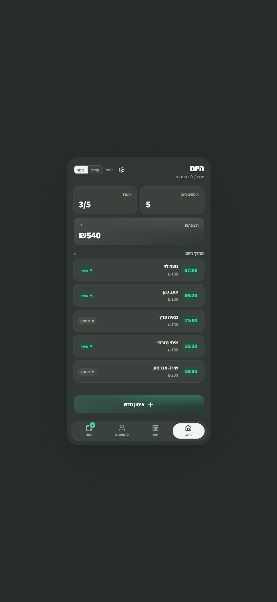
5 — Soft Slate אפור גרפיט
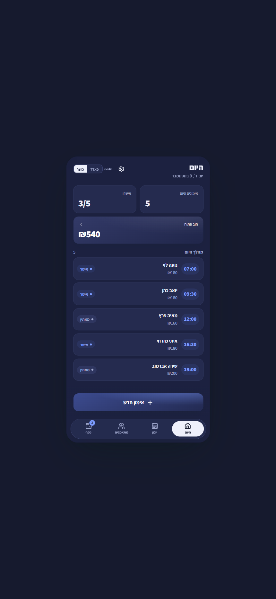
11 — Indigo Night אינדיגו
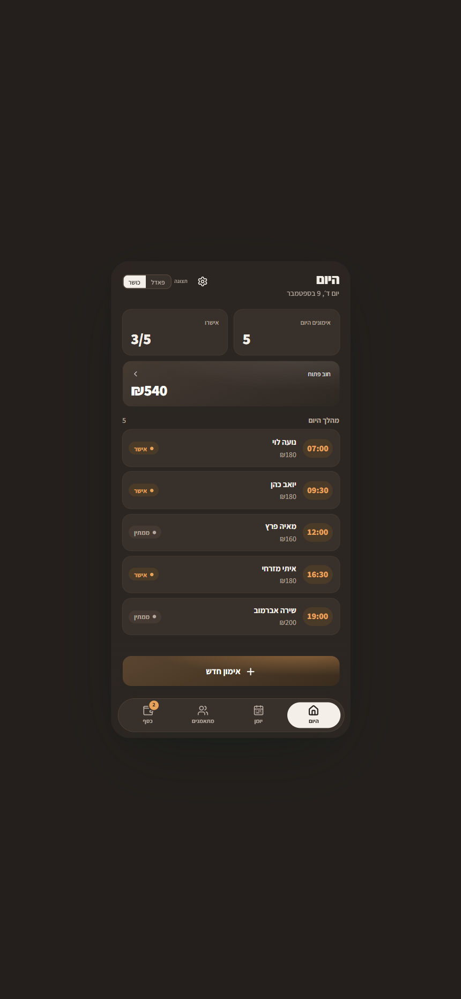
12 — Warm Dark חום-ענבר
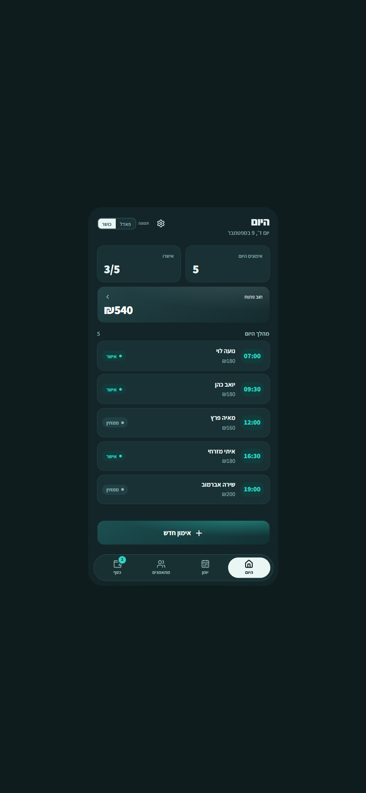
13 — Teal Glow טורקיז זוהר
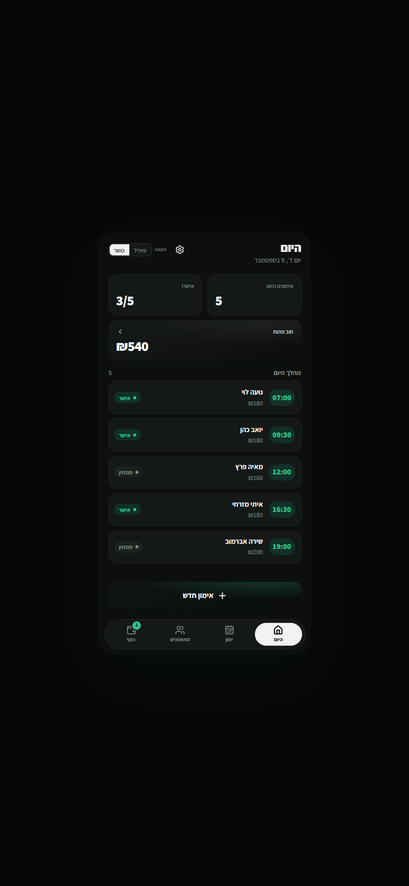
0 — Current המקורי (להשוואה)